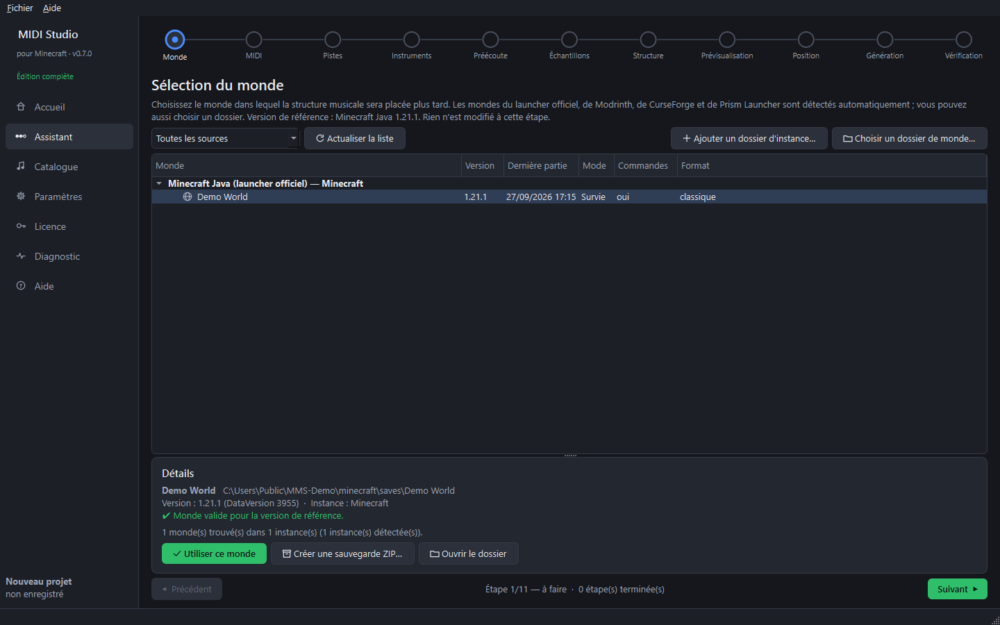

Étape 3 — Choisir le monde (étape 1 de l'assistant)
Objectif : choisir le monde Minecraft où sera placée la structure musicale.
- Sur la page Accueil, cliquez sur Nouveau projet. L'Assistant s'ouvre sur l'étape 1, Monde.
- La liste montre tous les mondes trouvés (launcher officiel, Modrinth, CurseForge, Prism). Un monde créé pendant que le programme est ouvert apparaît tout seul ; Actualiser la liste relance la recherche.
- Cliquez sur un monde : sa version, son mode de jeu, les commandes et son dossier s'affichent en dessous.
- Cliquez sur Utiliser ce monde.

Bon à savoir
- Les commandes doivent être autorisées dans le monde (la musique se contrôle avec
/function). Sinon : en jeu, Ouvrir au LAN → Autoriser les commandes, ou utilisez un serveur. - Fermez le monde dans Minecraft avant d'installer la musique (étape 10). Le logiciel le vérifie.
- Créer une sauvegarde ZIP… copie tout le monde dans votre dossier de sauvegardes sans le modifier. Une sauvegarde est aussi proposée automatiquement avant toute installation.
- Rien n'est écrit dans le monde à cette étape.
Guide suivant : importer le fichier MIDI.